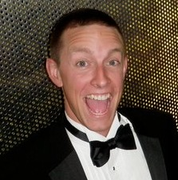

John D. Thornton

Captain of Industry
Chicago, IL
Please reach out to get in touch.
Summary
John Thornton is Marketing Consultant currently focused in the Real Estate Industry. He advises on strategy, new media, and digital advertising for destinations, OTA's, and hotels. He works primarily on focused direct response marketing programs and building brands through the digital story. Before joining Google, John worked at RKG, a large digital agency out Charlottesville, VA. John has attended the University Of Virginia and Northwestern's Kellogg School of Management.
Education

Experience
Google - Partner Lead
At Google, I have been responsible for consulting Google's largest clients in the Travel Industry. I have supported destinations, tour groups, theme parks, and OTAs. I have been responsible for about $15 million in annual marketing budgets. I have spoken and keynoted at several industry events. I have also contributed heavily to Google's national sales strategy for online video, consulting in Telecom, Food Service, Auto, and Insurance.
RKG - Marketing Manager
As a Marketing Manager, I have been responsible for leading marketing efforts at RKG. I work on business development and client acquisition. The position requires complete knowledge and understanding of Paid Search, Attribution Management, Facebook advertising, Display advertising, and Comparative Shopping Engines.
Skills
- Google AdWords
- Microsoft Office
- Coding HTML at the most basic levels
Hobbies
- Pick-up Basketball
- Softball
- Tutoring